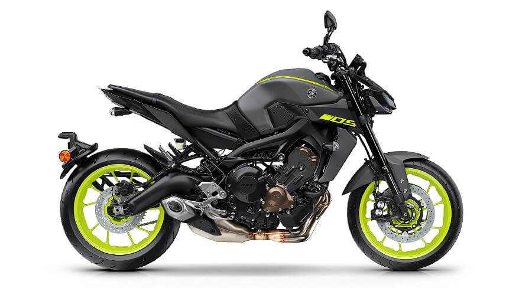

Bienvenidos a Yamaha Linea Master Of Torque
¿Que significa la sigla MT de Yamaha? La Yamaha MT pertenece a la rama de motocicletas de Master Of Torque de Yamaha. Estas motos son conocidas por sus siglas MT, acrónimo de Master of Torque, que se inició fraguarse en 2005 con la impactante MT-01 y hasta ahora se han fabricado siete modelos, cinco motores e innumerables versiones. Curiosamente la serie MT comenzó de arriba hacia abajo. La primera MT fue una moto con dos enormes cilindros en V de 1.670 cc y 90 CV de potencia, era la Yamaha MT-01, fabricada entre 2005 y 2012. En 2006, llegaría el segundo componente de la familia: La MT-03 mucho más accesible por motor, prestaciones y precio con 45 CV de potencia cuya versión 2019 ya se encuentra disponible. La Yamaha MT-09 nacida en 2013 tuvo el honor de estrenar un sorprendente motor de tres cilindros paralelos. Además, Yamaha lanzó un producto al alcance de la mano de muchos usuarios y eso pronto hizo de la MT-09 una moto muy popular que si pecaba de algo era de no contar con una horquilla y unos frenos para poder sacar el mejor partido de su motor. Por eso en 2017 llegó el relevo con mejoras en seguridad y más deportiva en las suspensiones, motor con nuevo diagrama, embrague antirrebote y cambio rápido. En 2014 Yamaha lanzó la MT-07 atacando a la competencia donde más duele, en el precio, con un producto muy vistoso y de un carácter indiscutiblemente MT: divertido. La moto nació con un nuevo motor de dos cilindros paralelos y 689 cc creado bajo la filosofía cross-plane que es el pilar de una nueva serie de motos consideradas económicas, urbanas y perfil bastante específico.
Yamaha MT03

Yamaha MT07

Yamaha MT09
Yamaha MT10
Tabla de diferencias entre estas motocicletas:
| Modelo | Cilindrada | Potencia | Torque | Peso | Vel Max Aprox |
|---|---|---|---|---|---|
| MT03 | 321CC | 42HP | 29NM | 168kg | 199km/h |
| MT07 | 689CC | 72HP | 67NM | 184KG | 230km/h |
| MT09 | 890CC | 87HP | 93NM | 189KG | 270km/h |
| MT10 | 998CC | 160HP | 112NM | 180KG | 295km/h |